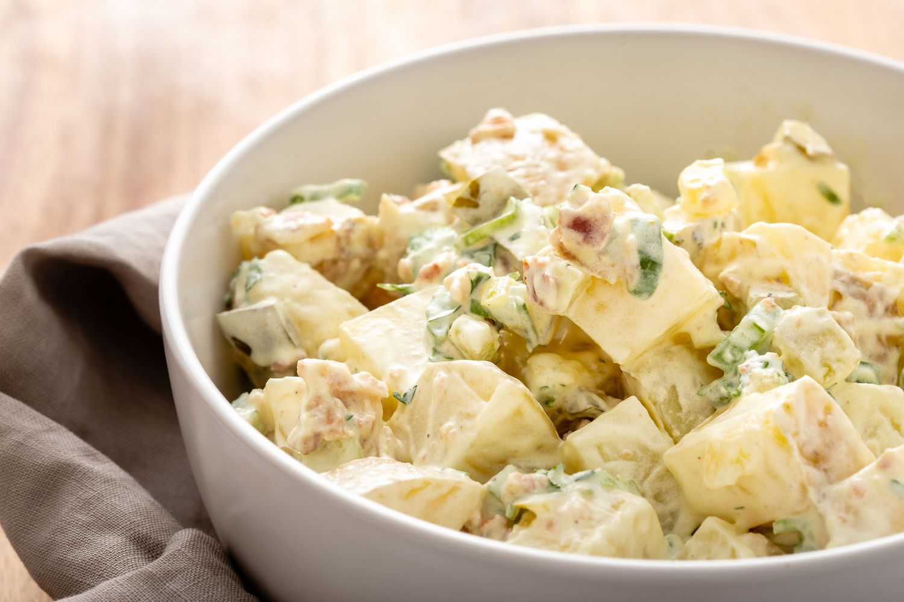

Potato Salad

A warm or cold Potatosalad is a light and tasty meal, it can be eaten by itself or as a Sidedish with a lot of different meals.
Ingredients
- Potatoes
- Eggs
- Celery
- Onions
- Relish
- Mayonnaise
- Mustard
- Seasonings
Steps
- Gather all ingredients.
- Bring a large pot of salted water to a boil. Add potatoes and cook until tender but still firm, about 15 minutes.
- Drain, cool, peel, and chop potatoes.
- While potatoes cook, place eggs in a saucepan and cover with cold water. Bring water to a boil; cover, remove from heat, and let eggs stand in hot water for 10 to 12 minutes.
- Remove from hot water, cool, peel, and chop eggs.
- Combine the potatoes, eggs, celery, onion, relish, mayonnaise, mustard, garlic salt, celery salt, and pepper in a large bowl. Mix together well and refrigerate until chilled.
- Enjoy!